L'Art des Bijoux & Métaux Précieux
Plongez dans l'univers étincelant des bijoux marocains, où l'or, l'argent et les pierres précieuses se transforment en véritables œuvres d'art sous les mains expertes des maîtres artisans.
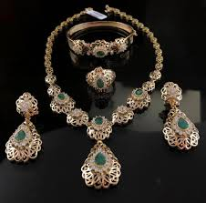
L'artisanat des bijoux au Maroc est une tradition millénaire qui puise ses racines dans les cultures berbère, arabe et andalouse. Chaque région, chaque tribu a développé son propre style, ses motifs symboliques et ses techniques de fabrication uniques.
De l'argent massif de l'Atlas à l'or fin des villes impériales, en passant par l'émail de Fès et les pierres semi-précieuses du Sahara, les bijoux marocains racontent une histoire de savoir-faire, de statut social et de protection contre le mauvais œil.
L'Orfèvrerie Traditionnelle
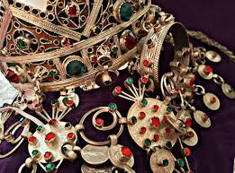
Bijoux Berbères
Pièces massives en argent, souvent ornées de motifs géométriques et de pierres cornalines, symboles de protection et de fertilité.
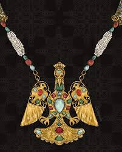
Orfèvrerie Fassie
Or fin travaillé avec émaux colorés, inspiré de l'art hispano-mauresque, caractéristique des pièces de mariage.
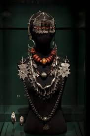
Parures Sahariennes
Amulettes en argent et cuivre incrustées de pierres semi-précieuses, portées comme protection contre les énergies négatives.
Techniques Ancestrales
Cire Perdue
Méthode ancienne permettant de créer des pièces uniques en coulant le métal dans un moule de cire sculpté puis détruit.
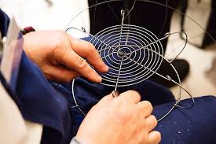
Filigrane
Art délicat consistant à tresser des fils métalliques très fins pour créer des motifs ajourés d'une grande finesse.
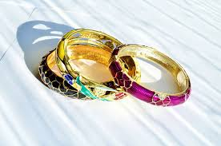
Émaillage
Application de poudres de verre colorées sur métal précieux, cuit à haute température pour un effet vitrifié durable.
Trésors du Patrimoine
Découvrez une sélection de pièces emblématiques de l'orfèvrerie marocaine
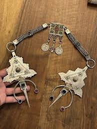
Fibule Berbère
Argent massif - Haut Atlas
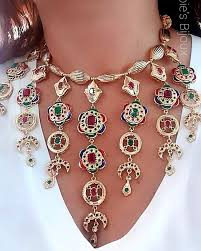
Collier de Mariage
Or et émail - Fès
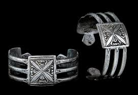
Bracelet Saharien
Argent et cornaline - Tafilalet
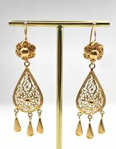
Boucles en Filigrane
Or fin - Meknès
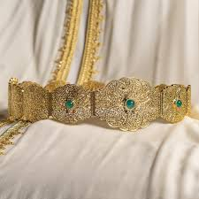
Ceinture Royale
Or et émail - Rabat
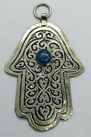
Amulette Protectrice
Argent et turquoise - Sud Maroc
Un Héritage à Préserver
Les bijoux marocains ne sont pas seulement des objets de parure, mais de véritables témoins de l'histoire et des croyances populaires. Chaque pièce, qu'elle soit modeste ou somptueuse, porte en elle les secrets d'un savoir-faire transmis de maître à apprenti depuis des générations.
Aujourd'hui, cet art ancestral connaît un renouveau grâce à des créateurs qui réinterprètent les motifs traditionnels avec une sensibilité contemporaine, tout en respectant les techniques et l'esprit des anciens.